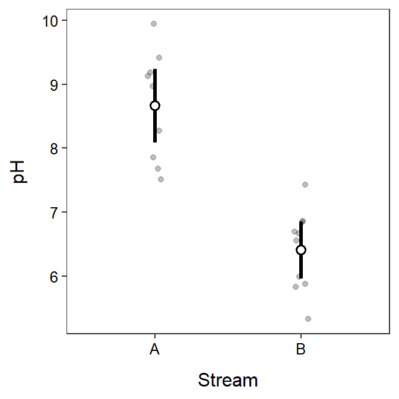

> d <- read.csv("phLevels.csv")> levenesTest(pH~river,data=d)Levene's Test for Homogeneity of Variance (center = median)
Df F value Pr(>F)
group 1 0.8292 0.3745
18 > t.test(pH~river,data=d,var.equal=TRUE) Two Sample t-test with pH by river
t = 6.9849, df = 18, p-value = 1.599e-06
alternative hypothesis: true difference in means between group A and group B is not equal to 0
95 percent confidence interval:
1.576042 2.931958
sample estimates:
mean in group A mean in group B
8.662 6.408 > ggplot(data=d,mapping=aes(x=river,y=pH)) +
geom_jitter(alpha=0.25,width=0.05) +
stat_summary(fun.data=mean_cl_normal,geom="pointrange",
size=1.1,fatten=2,pch=21,fill="white") +
labs(y="pH",x="Stream") +
theme_NCStats()